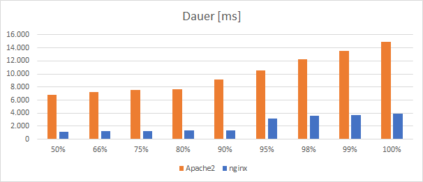
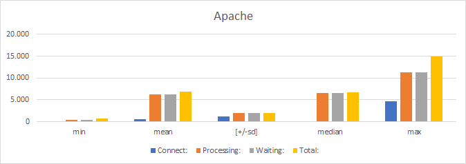
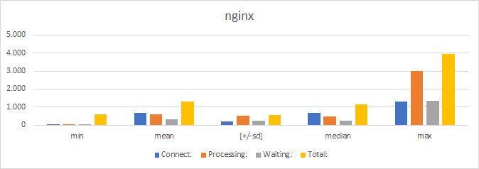

Apache und nginx parallel betreiben und mit ApacheBench gegeneinander antreten lassen
Mein Ziel ist es, nginx und Apache als Webserver auf einem System laufen zu lassen. Alle HTTP/HTTPS-Anfragen werden von nginx beantwortet. Anfragen an den Port 8080 (für HTTP) oder 4443 (HTTPS) werden von Apache beantwortet. So kann ich nginx und Apache in einem Benchmark vergleichen, indem ich einfach nur die Ports ändere. Das Setup ist aber auch für andere Zwecke sinnvoll, wenn du z.B. die Burst-Einstellungen von nginx in Aktion sehen oder bestimmte Web-Dienste strikt mit Apache bedienen willst. Los gehts…
Ich gehe mal davon aus, dass du nginx und Apache fertig eingerichtet hast. Nginx läuft idealerweise schon (siehe meine 3-Teilige Anleitung) Dann musst du zunächst mal dafür sorgen, dass die Firewall (z.B. iptables) die alternativen Ports 8080 und 4443 auch durchlässt. Das funktioniert folgendermaßen:
sudo iptables -A INPUT -p tcp -m multiport --dports 8080,4443 -m conntrack --ctstate NEW,ESTABLISHED -j ACCEPT
Wenn du prüfen willst, ob die Änderung übernommen wurde, machst du das mit
iptables -L --line-numbers
Den line-numbers-Parameter kannst du dir schenken - willst du aber einen Eintrag in iptables löschen, können die Zeilennummern sehr hilfreich sein, siehe:
iptables -D INPUT 3
Die 3 verweist auf die Zeilennummer, INPUT auf die Chain. Aber das nur um Rande. Weiter gehts mit unserem Server-Setup.
Als nächstes teilst du Apache mit, dass ab sofort auf den alternativen Ports nach Anfragen gelauscht wird. Dazu passt du die Porteinstellung in der Datei /etc/apache2/ports.conf entsprechend an. Die if-Kondition macht die Sache etwas sauber, muss aber nicht sein:
Listen 8080
<IfModule mod_ssl.c>
Listen 4443
</IfModule>
Weiter geht es mit der Einstellung des virtuellen Hosts für Apache. Dazu legst du eine Datei mit der Endung “conf” im Ordner /etc/apache2/sites-available/ an und füllst sie folgendermaßen:
<VirtualHost *:8080>
ServerName www.example.com
ServerAlias example.com
Redirect permanent / https://www.example.com:4443/
DocumentRoot "/var/nginx/apache2_example_com/htdocs"
DirectoryIndex index.html index.php
</VirtualHost>
<VirtualHost *:4443>
ServerName www.example.com
ServerAlias example.com
ErrorLog "/var/log/apache2/example.com.error.log"
CustomLog "/var/log/apache2/example.com.log" common
LogLevel warn
DocumentRoot "/var/nginx/apache2_example_com/htdocs"
DirectoryIndex index.html index.php
<Directory "/var/nginx/apache2_example_com/htdocs">
Options -Indexes +FollowSymLinks +MultiViews
DirectoryIndex index.php
AllowOverride All
Require all granted
</Directory>
RewriteEngine on
Include /etc/letsencrypt/options-ssl-apache.conf
SSLCertificateFile /etc/letsencrypt/live/www.example.com/fullchain.pem
SSLCertificateKeyFile /etc/letsencrypt/live/www.example.com/privkey.pem
</VirtualHost>
Ich will die Einstellungen nur kurz überspringen, da sie sich eigentlich selber erklären. Der erste Block greift die HTTP-Anfragen ab und leitet diese sofort weiter (Redirect permanent). Ich definiere hier zwar auch DocumentRoot und Index, aber das nur der Vollständigkeit halber. Der zweite Block kümmert sich um die HTTPS-Anfragen. Wie du siehst, passiert hier kein großer Zauber. Ich nutze PHP nur als Modul, setze ein paar Logging-Eigenschaften fest und übermittle die SSL-Zertifikate. Easy peasy. Lemon squeezy.
Wie du siehst, nutze ich für Apache außerdem ein separates Verzeichnis. Achte bei Wordpress auch darauf, die URLs entsprechend anzupassen, sonst wird Wordpress die Anfragen immer wieder zu nginx weiteschicken:
define('WP_HOME','https://example.com:4443');
define('WP_SITEURL','https://example.com:4443');
Als nächstes gönnst du dem Apache-Server einen Neustart:
sudo service apache2 restart
Und das war es auch schon. Jetzt kannst du mit ApacheBench ein paar Requests abfeuern. Denk dran, dass du auf Windows ab für HTTP-Requests und abs für HTTPS-Requests nutzen musst. Mit diesem Aufruf teste ich erstmal die Performance von meinem Apache-Setup:
abs -n 1000 -c 100 https://www.example.com:4443/
Der Parameter n steht für die Anzahl von Anfragen insgesamt. Mit c kannst du festlegen, wieviele Anfragen du gleichzeitig abfeuern willst (c muss demnach kleiner sein als n). Der Forward-Slash am Ende ist wichtig, andernfalls erkennt abs die URL nicht an. Das gleiche mache ich ohne Port-Angabe um den nginx-Server anzusprechen. Und das sind die Ergebnisse:
Auswertung der Ergebnisse

Abbildung 1: Vergleich der Antwortzeiten von Apache und nginx
Die Abbildung zeigt, wie hoch der Anteil der Anfragen ist, der nach einer bestimmten Zeit (in Millisekunden) beantwortet wurde. Nginx ist ganz klar Gewinner. Alle Anfrgaen wurden inerhalb von 4 Sekunden bearbeitet, die Hälfte der Anfragen soger innerhalb knapp 1 Sekunde. Bei Apache sieht das ungleich schlimmer aus. Allerdings wurden bei nginx 68 Anfragen abgewiesen, bei Apache 0 - eine Folge meiner Warteschlangen-Einstellung.
Die folgenden Diagramme zeigen noch mal die Zusammensetzung der Anfrage:
- Connect - Zeit bis die Verbindung hergestellt wird
- Waiting - Zeit bis zum ersten Datenpaket (Time-To-First-Byte, TTFB)
- Processing - Zeit, bis die vollständige Antwort vom Server eingangen ist, seit die Verbindung geöffnet wurd
- Total - Gesamte Wartezeit

Abbildung 2: Messergebnisse für die Anfragen an Apache

Abbildung 3: Messergebnisse für die Anfragen an nginx
Die reine Verbindungszeit ist bei beiden Servern relativ niedrig, dieser Wert gibt aber auch eher Rückschlüsse auf die Qualität des Netzwerks. Die TTFB ist bei Apache relativ hoch., es dauert also eine ganze Weile, bis Apache die Anfrage verarbeitet und entsprechend die ersten Daten sendet. Das wird mit ziemlicher Sicherheit am grundsätzlich nicht sehr performanten php-mod liegen. Insgesamt ist das Ergebnis natürlich wenig überraschend. Mein Ziel war ja, mit nginx und php-fpm ein schnelles Setup zu schaffen. Was hiermit wohl gelungen sein dürfte (Anmerkungen zur Repräsentativität werden gerne entgegengenommen). Fairerweise sei aber noch angemerkt, dass ich Apache in der Standard-Einstellung verwende und wirklich keine Maßnahmen unternommen habe, um die Geschwindigkeit zu optimieren.